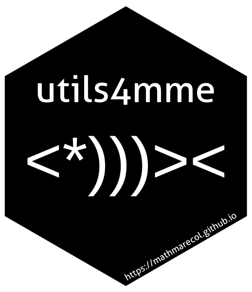

utils4mme 
utilsmme is collection of utilities developed by and for the Mathematical Marine Ecology Lab (MME) at the University of Queensland. They are intended for use within the lab to facilitate ease of code-sharing and reducing the amount of repetitive code that must be maintained. The authors of this package compiled the functions and maintain the package, but the author of the individual functions are indicated in the function help.
Some functions in this package will work for all users, but many will require access to the UQ Research Data Manager (RDM). For the funcations that require UQ data, you will need to download and expand MME1DATA-Q1215/SpatialPlanning/SpatPlan_Data.zip. To use the utils4mme package defaults, expand this file into your home directory (e.g. /Users/jason/SpatPlan_Data).
You can use any location you want, but you will need to specify the location for some functions, as per the function help. Note: The download is only 2GB, but the expanded data is 35 GB in size. If you need help subsetting the data to your region due to memory or HD space constraints, contact the developers. If you run into memory problems, you can try increasing the amount of the HD space gdal is allowed to use. Sys.setenv(GDAL_MAX_BAND_COUNT = 120000)
Installation
You can install the development version of utils4mme with:
if (!require(remotes)) install.packages("remotes")
remotes::install_github("https://github.com/MathMarEcol/utils4mme")